Matthew J. Smith
UX Designer
Toronto
mjs.design draft #2
CCRC
0.0: Project Overview
Duration: 6 months
Tools: dry-erase marker, paper, whiteboard, Adobe Photoshop, Adobe Illustrator, Adobe InDesign, microphone, webcam
Deliverables: research, user tests, wireframes, hi-fi mock-ups
Team Size: 4
My Own Role: UX Designer / Researcher
Time to Read: ~25 minutes
0.1: Introduction
The CCRC - or, the Canadian Centre for Rural Creativity - is a non-profit school (that teaches art (e.g. photo-journalism, film studies, etc. ) and tech. (e.g. digital design, etc.) and business development centre in the beautiful heart of rural Ontario, in a town called Blyth.
In 2015, I was hired as UX Designer (and Content Strategist) for the development of a website for the CCRC (and parent organization, Blyth 14/19 Inc.). The project managers (hereafter: PMs) needed a digital face - web presence, social media, etc. - to attract prospective students, donors, volunteers, and event participants; conjunctive with with consistent content (tone, message, etc.) across platforms.
(P.S. as this project is ongoing, the live website may not be reflective of our most recent designs.)
0.2: The Challenge
The CCRC is a unique pitch: it’s a not-for-profit school (with paid classes) - and business development centre - in operation in rural Ontario. The CCRC wants to foster art, business, and tech. engagement and development in a rural context.
The CCRC had a website - as their parent corporation, Blyth 14/19 - that hadn’t met their conversions goals: course registrations had opened and - despite the impressive pedigree of its instructors - were small; and so were donor dollars, volunteers, event participation, etc.
The CCRC is a unique pitch: it’s a not-for-profit school - and business development centre - in rural Ontario.
Their goals for each conversion measure were aggressive; and included was their goal to raise two million dollars in donations to fund, in part, a facilities expansion to their school in Blyth, Ontario.
The challenge, to me, was that users might not, for the most part, associate "rural" with tech. (or art, or business); and the second that a website isn’t a "silver bullet" solution on its own.
Many treat websites like the baseball diamond from Field of Dreams: "if you build it, they will come".
But: that isn’t true; website’s don’t engage people: people engage people (who engage people, who engage people, etc...). What the CCRC needed wasn’t just a website, but a website and a robust social media campaign.
I was fortunate that the PMs understood the importance of social media, too - one of them was quite experienced with it - and that that would be a part of the project: more a web presence project than a website project.
So: I needed to help the CCRC build a web presence, with a well-designed website - which targeted different groups of users (i.e. students, volunteers, etc.) as its backbone.
(P.S. the business development centre branch of the CCRC was still in development then; and was outside of the scope of this project.)
1.0: Strategy: The Product, Stakeholders’ Goals, Users’ Goals
The goals that stakeholders have for a product aren’t the same as the goals the products users’ have: e.g., the goal to have users sign-up for your newsletter isn’t your users’ goal to do the same.
UX Designers need to do as much research as possible - into both sets of goals - to discover what between them is compatible for the product’s design.
But: what is your product? What makes your product special vs. its competitors?
In other words: why should your users care?
So: I needed to help the CCRC build a web presence, with a well-designed website - which targeted different users groups - as its backbone.
1.1: Stakeholder Interviews
To answer that question, I turned to the stakeholders.
The CCRC PMs had decades of rural engagement experience each. I met with them at the outset of the project to discuss their mission.
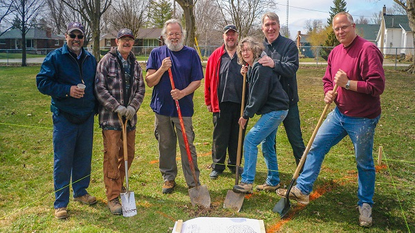As a UX Designer, expertise is important: a website like the CCRC’s can entice users through the expertise of its staff (communicated through the website’s content). For a website with that sought student enrollments, donor dollars, etc., it would be important that the content (and UX) communicated a standard that users would expect.
From interviews with these stakeholders, I was able to develop the product’s value proposition: that is, what it is, who it’s for, who it helps, etc.:
To the PMs, the CCRC meant sustained - and sustainable - rural development in arts, business and tech. with their project in Ontario - and its hopeful engagement of passionate users - fit to serve as a template for likewise organizations across Canada; and across the globe.
The PMs explained that rural communities have experienced a significant “brain drain”, to where youth - with interest in art, business, tech., etc. - no longer felt that their dreams fit a rural context.
The PMs' hope was that, through the school, business development centre and events (the CCRC hosts a lot of cultural events: art installations, concerts, theatrical plays, etc.) there could be a counterpoint to the notion of rural-as-unhip (is my use of unhip, itself, unhip?) and fresh engagement.
The PMs wanted - through the project - to provide users with a positive experience (through web content, classes, participation, etc.) that could illustrate the strength and value of “rural”; and to engage people in a rural context.
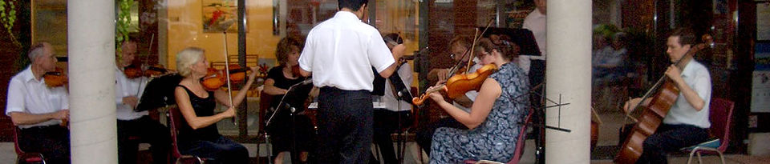1.2: Key Performance Indicators (KPIs); Stakeholder Wants
From the value proposition, we developed initial KPIs, which would guide us through the remainder of the project:
(P.S. the stakeholders hadn’t recorded much data related to their website; these KPIs are “vs. current”, in most cases.)
- website engagement:
- # of new student registrations
- # of new donors
- # of donation dollars raised
- # of “contacts” (re: school, donations, events, volunteer, etc.)
- # of unique website visitors
- # of page views
- total time on site
- social media engagement:
- # of social media website referrals
- # of social media followers
- # of social media “Likes”, “Favorites”, etc.
- # of social media “Shares”, “Retweets”, etc.
- offline (rl, lol) engagement:
- # of event participants (ticket sales for #s)
- # of “contacts” (re: school, donations, events, volunteer, etc.)
- # of volunteers
Based on the stakeholder interviews and the KPIs I had a good idea of what the stakeholders wanted from the website, and social media campaign: more student enrollments and more donations; in addition to more local engagement (volunteers, event participants) and increased awareness re: the CCRC, and its mission.
The PMs wanted to provide users with a positive experience that could illustrate the strength and value of “rural”.
I recommended then that the PMs hire a web developer and a visual designer to get them into the designs as soon as would be possible, which was agreed to.
So: I had a good idea about what the stakeholders wanted from the product; it was time to determine who its users might be.
1.3: The Product; Who the Users Could Be
The product was the CCRC’s mission, which might drive donations, volunteers, event participation etc. if communicated right; but the product was also the school, and schools need students.
What might set the CCRC’s classes apart were the instructors: professionals with serious credentials, active in their fields, who could help students get job-ready.
The website would need to communicate this to users: the value of the CCRC’s educational options, the credentials of the instructors, etc.
The PMs envisioned their users as somewhat disparate groups: for example, a user who hears about the CCRC’s mission - to illustrate the value of rural, to attract fresh talent to rural, etc. - and believes in themselves it might want to volunteer, or donate.
However: that same user perhaps wouldn’t be galvanized by the CCRC’s educational options (classes, etc.) other than how they contributed to the organization’s mission.
1.4: What the Users Wanted
I decided to answer that question via user interviews, and audits of the CCRC’s existing website (as Blyth 14/19), two images of which are shown here:
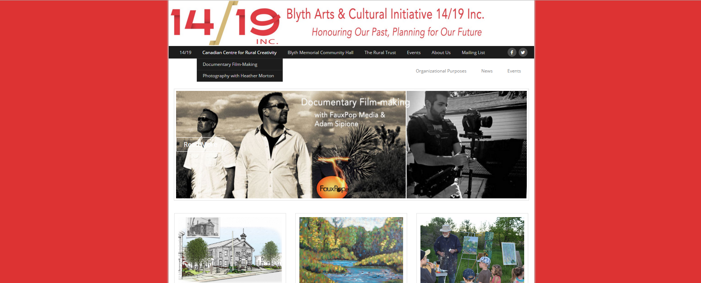 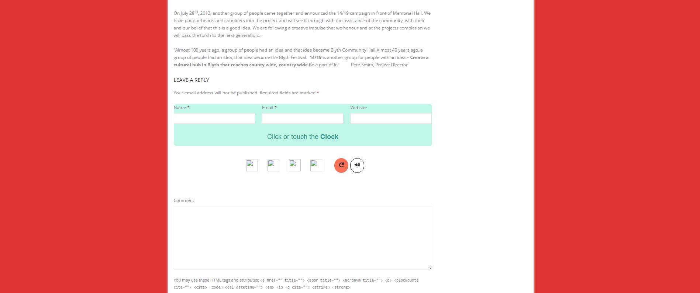I built a user survey in Google Forms that I distributed to personal networks (with the promise of a $10 Starbucks gift card as compensation if their response met the criteria for an interview).
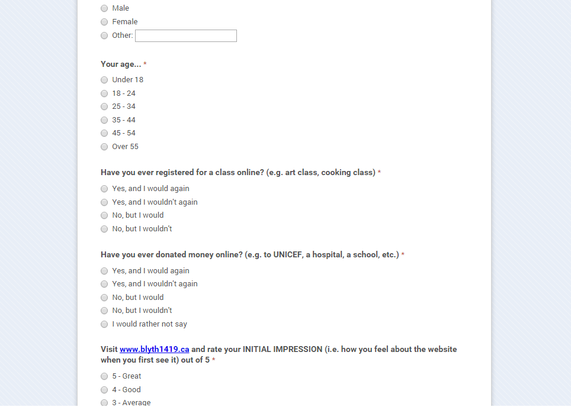I received 5 responses (of the ~15 that I sent out) and of those, selected three participants who I felt represented CCRC users.
1.4: The User Audits
I was able to perform the audits in person (the participants were from Toronto). I had them test the Blyth 14/19 website (but also probed them for other useful information). I recorded them; and from one, received consent to post it (thank you, interviewee):
The upshot of these audits was that, for the most part, users sought to use desktop, mobile, or a combination of the two to do the following:
- find information about the CCRC (e.g. its mission, its history, etc.)
- find information about the CCRC’s classes (i.e. class content, class instructors, class schedules, class costs, how to register for classes, etc.)
- see classes within organized groupings (e.g. "photography classes", "acting classes", etc.)
- find out more information about the CCRC’s events (what, when, where, etc.)
- see a calendar of the CCRC’s events
- see media from past events the CCRC has put on
- find information on how to get involved with the CCRC
- donate $$$ to the CCRC
- find information about the use of donated $$$ (e.g. how does a donation help?)
- access media content (e.g. pictures, videos)
- see the CCRC’s social media platforms; and connect to them
The interviews yielded more general insights as well, which I’ve compiled here:
- information gathering: to be able to view information on courses, instructors, prices, etc. simply and without a lot of digging
- to be able to register for a course entirely online
- reasons why they should attend classes at this school as opposed to others (that were potentially closer/easier to access); value proposition information, career advancement, etc.
- “youngness”, or “freshness”: the suggestion that the CCRC “meshed” with their lifestyle, or seemed new, and different; social media presence, youthful voice/aesthetic, etc.
- value: why should they donate to a specific organization vs. other organizations? What does the CCRC do differently? What is unique, or special, about it?
- legitimacy: the idea that an organization is legitimate; and will spend their donated dollars wisely and effectively
- what a dollar does: information about what their dollars will be used for; services, programs, etc.
- stability: a more conservative brand voice, aesthetic, etc.
I received 5 responses and of those, selected three participants who I felt represented CCRC users.
(P.S. some of these insights might seem at odds with each other; but user interviews don’t always produce consistent results; it’s the job of the UX Designer to prioritize, re-test, and integrate where possible.)
I developed storyboards based on the data; I’ve included one - of a student’s experience - here:

The current website hadn’t met most of these goals; in particular, the participants had found it difficult to navigate (navigation items were unclear) and overloaded with superfluous information that either seemed irrelevant, or difficult to understand. The simple tasks that I had given them - find the donations page, register for a course, etc. - often took a long time.
Without clear paths into content that interested users, conversions would remain small.
1.6: Return to the PMs
I brought the user interview results to the PMs, who confirmed to me that the data represented their own hopes for the project.
It was what we had to go on; the CCRC was a recent organization; in most cases I would’ve looked to previous users (previous students, donors, etc.) for data, but we had little of that then.
There isn’t a substitute for good user research in UX: “who are our users?” is one of the process’ most important questions. User-agnosticism has no place in modern design.
1.7: User Personas
I used what we did have - data from newsletter sign-ups, event participation, etc. - to develop user personas. I’ve included two here:
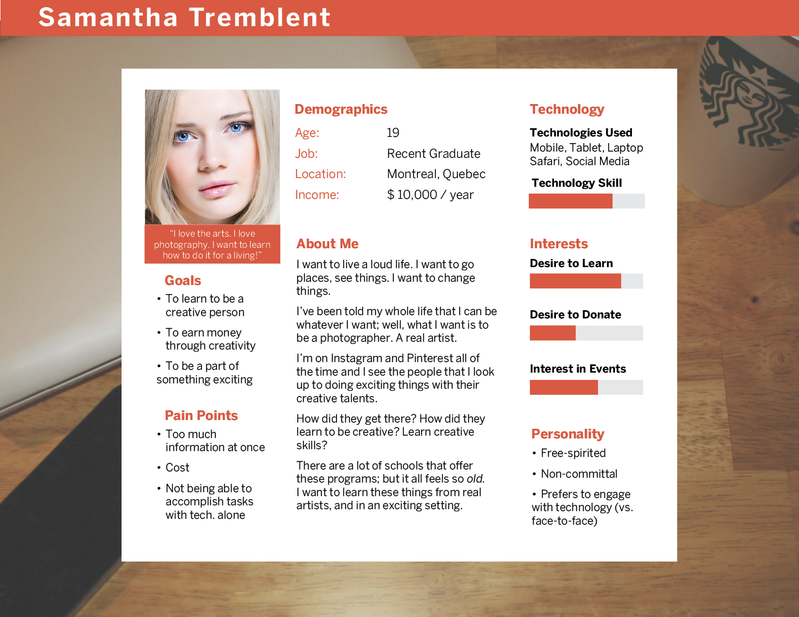
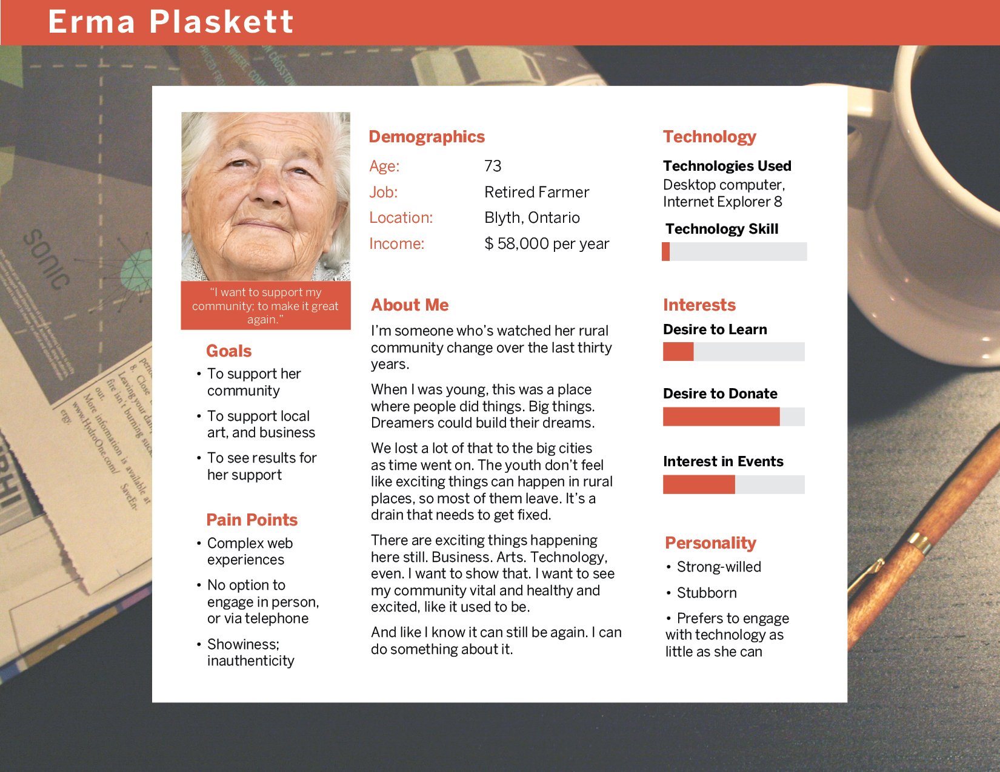
The data suggested that users with disposable income and who supported the CCRC’s mission tended to be older: and either established, or retired; more time-rich, interested in events or in volunteer support.
Users with interest in classes, education, etc. tended to be younger, with lower incomes and were less concerned with the CCRC’s mission, but more with who the instructors were, what could be learned, and if those skills were applicable to jobs. These users could become “alma mater” donors, too; but it wasn’t expected in each case.
There isn’t a substitute for good user research in UX. User-agnosticism has no place in modern design.
2.0: Scope: The Site’s Features
I met with the PMs again to discuss which features needed to have (and, just as important: didn’t need to have).
The PMs and I identified our “must dos” as:
- responsive to all screen sizes
- a robust course registration flow, with secure payment options
- a secure donations system (the PMs wanted to use CanadaHelps.org)
- an events calendar
- a contact form for inquiries
- a newsletter, with simple registration
The PMs wanted a large hero banner at the top of the page, which could showcase the CCRC's media content (as it was relevant to site content).
I considered Erma, and decided too that support for old browsers (IE8, IE9, etc.) would be important to ensure that the UX didn't break down for the website's less techy users.
I developed a Functional Specifications document, a page of which I’ve included here:
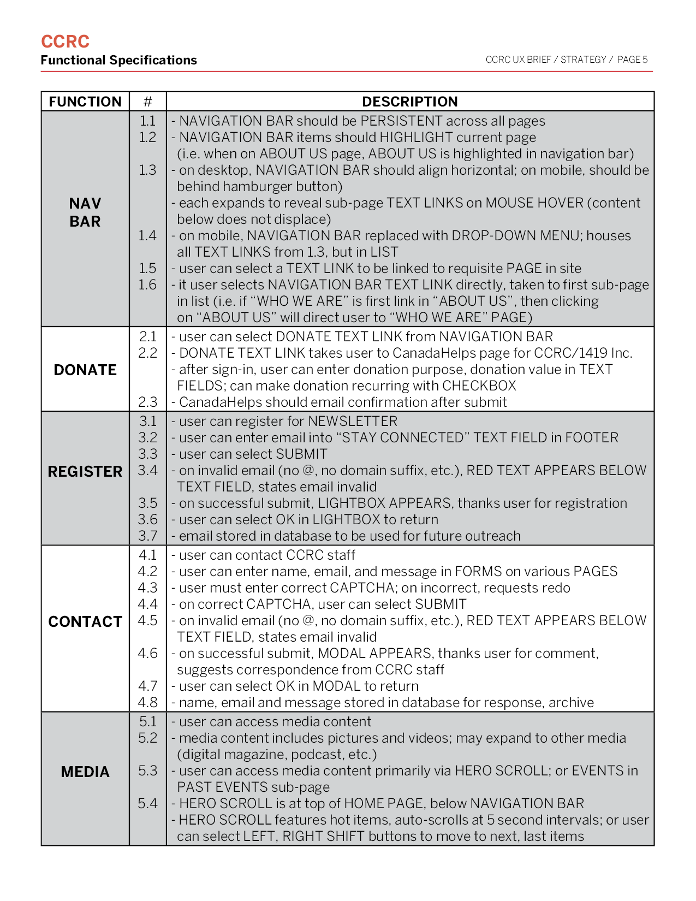There was a bit of back-and-forth and pivots re: features - in terms of development costs, etc.; as the PMs had hired a web developer who would do the website’s front-end - and (due to a more limited initial class scope) the PMs decided not to include a formal, automated course registration system; at least, not at first. There would be individual course pages - with a picker - but registration would be done via a contact form - to be developed - or email or phone.
I met with the PMs again to discuss which features needed to have (and, just as important: didn’t need to have).
As millennials (those aged ~18 - 32) would, we assumed, comprise a large portion of student users, I suggested that the lack of an initial registration system would hurt; but as a UX Designer, it isn’t always possible to implement your ideas; discussions of scope are important because costs - and time - start to come in to focus(in particular with not-for-profit projects).
What you can do is present your designs, advocate for the users and hope that the stakeholders approve (or are able to act on your advice); and if not, find the best optionable means to support the project’s UX.
However: there was unanimous agreement on the importance of responsiveness. Whether or not a website should be responsive isn't so much a question in 2016: and if it were, the answer would be "yes" ninety-nine times out of every hundred. Based on research in 2012 from Google, 52% of users said that a poor mobile experience reduced their likelihood to engage with an organization at all.
With the CCRC as a new organization, it was of particular importance to make a good initial impression; and that meant a consideration for responsiveness at each step in the design process.
I had the PMs confirm the scope direction - to avoid the dreaded "scope creep" (where the project tries to add more and more features as it goes forward), later on - and moved forward with the information architecture.
3.0: Structure: Feature Arrangements
With the web developer on board then, I was able to run design ideas past him as I moved into the information architecture; which can be invaluable, as a UX Designer. Good UX Design, for the most part, is a collaboration between a project’s stakeholders, users, designers, and developers, who are in contact as often as is possible re: the project.
3.1: Content Audit
I got into the Blyth 14/19’s content to do an audit for what would become the CCRC website’s content. I used what I had documented in the user audits (1.4) here, too.
The navigation was what I noticed first: it was 7 items - 14/19, Canadian Centre for Rural Creativity, Blyth Memorial Community Hall, The Rural Trust, Events, About Us, and Mailing List - with two social media buttons on the end.
There were a number of heuristic violations here: e.g., if a user hadn’t visited the site before, 4 of those 7 items (14/19, Canadian Centre for Rural Creativity, Blyth Memorial Community Hall, and The Rural Trust) would probably confuse them. What are these? If I select 14/19, what will that take me to? What does Blyth 14/19 mean?
If I was confused, the users likely would be, too. In particular, users of more advanced age for whom the Internet was more of a tool - with clear, obvious features - than a whole lifestyle.
It didn’t help that the website’s content above the fold didn’t communicate at all what the website was, or who it was for (which made the Mailing List navigation item next-to-valueless). There was an auto-scroll carousel with the text embedded in the images (for the most part), but none of those had a clear suggestion of what will happen once I selected one.
If I were a user who was interested in enrollment in a class, I wouldn’t have known where to go and with all of the educational options available online, that presented serious problem.
52% of users say that a poor mobile experience reduced their likelihood to engage with an organization (Google, 2012).
The written content was solid, but needed to be more informative.
I documented each violation that I encountered. I would use these as I got further into the project’s information architecture; and later when I would build the copy deck for the new website.
I met with the PMs and web developer and made suggestions re: the content: omissions, additions, etc. and obtained approvals re: direction before I continued.
3.2: The Golden Thread
I like to develop golden threads (or happy paths, journey maps, etc.) to help me and my teams visualize where pain points or moments of joy could be in a product’s user flows. What this does is help me to envision the design of these flows from an architectural standpoint. I’ve included one that I developed for two student personas (Samantha and Kyle) that I based on my earlier user interviews here:
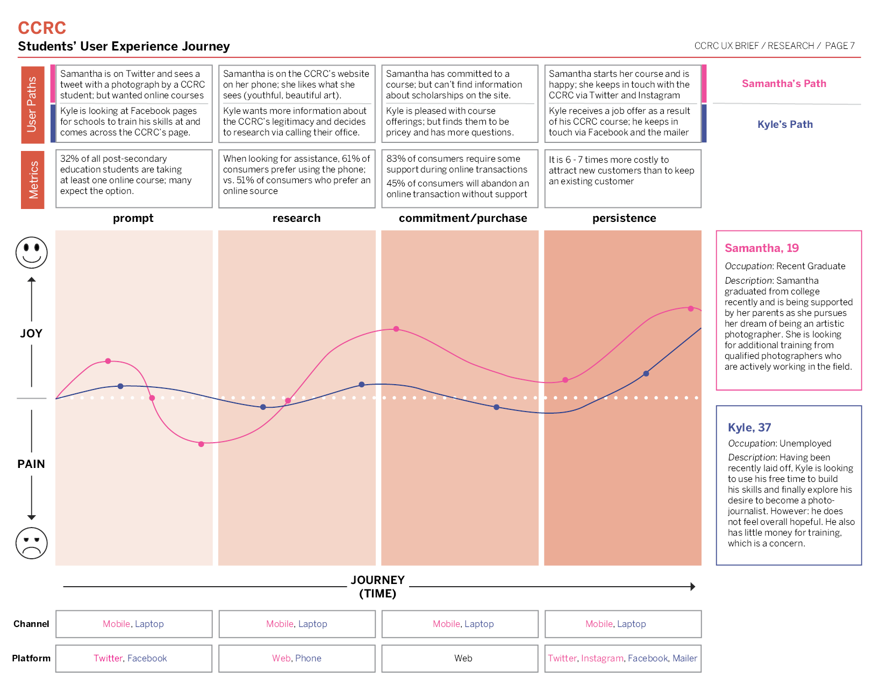
3.3: Card Sort
I used the research and the content audit that I’d done to perform some card sorts: one with the participants of the user interviews, and one with the PMs themselves.
I decided to do an open card sort, which means that the participants were given content cards, each of which represented a “node” of content (e.g.: “Courses”, “Our Mission”, etc.) and then asked to develop categories to put them into (e.g. a participant could develop a category called “About Us” for “Our Mission”, etc.).
I’ve included an image of the user interviews participants’ card sort here:

The results, I thought, were good; both groups’ participants developed better-recognizable content categories, which would inform the sitemap that I would design.
I decided to do an open card sort, which means that the participants were given content cards, each of which represented a “node” of content and then asked to develop categories to put them into.
3.4: Sitemap
I envisioned a website with clear, broad content categories for the navigation.
The PMs wanted the home page to feature content beneath the hero. Each item would have the appearance of a blog post, but be a showcase for CCRC events, courses, instructors, etc. with brief written descriptions that would funnel users into content. The CCRC had a lot of irons in the fire - and a lot of partners who supported them - and wanted to have the means to showcase various content, but not add spam to the hero banner.
It was important to consider what contextual information could facilitate conversions on each page (as well as have a constant place for a newsletter call-to-action) and decided to test a sidebar that could feature these.
I replaced “The Canadian Centre for Rural Creativity” navigation item - which had contained the CCRC’s classes - and replaced it with “Take A Course” for more active language, which I believed would funnel student users into that route (but I would test alternative copy later on in the process).
On the “Take A Course” page would be a list of current courses, with a field for users to enter search criteria (i.e. “arts management”), and a sidebar with categories (e.g. "photography", "acting") to filter the list (which I based on the user suggestions from in 1.4). Each course page would host content that suggested to users what cost of the course was, and what the course could offer them (which would include information about the instructor, and their own credentials).
On donations: research suggested that a “donation” button should stand out from the rest of the content, prominent.
I looked into donate button micro-copy and discovered that “DONATE NOW” performed better than most other common options (i.e. “Contribute”, “Please Give”, etc.); but even better than “DONATE NOW” was “Support the X”.
However: “Support the Canadian Centre for Rural Creativity” was too large (I would’ve had to reduce the text size too much); and “Support the CCRC” was too non-descript.
It was important to me to consider Erma - one of the user personas that I developed, and who I thought represented a close-to-typical donor user - and what she would be most comfortable with: a large, obvious button; and an accessible “About Us” page with more info. re: the CCRC’s mission, what donations are used for, etc.
I imagined a website with clear, broad content categories for the navigation.
I presented these ideas - and the completed sitemap - to the PMs and the developer and received approvals. I've included the sitemap here:
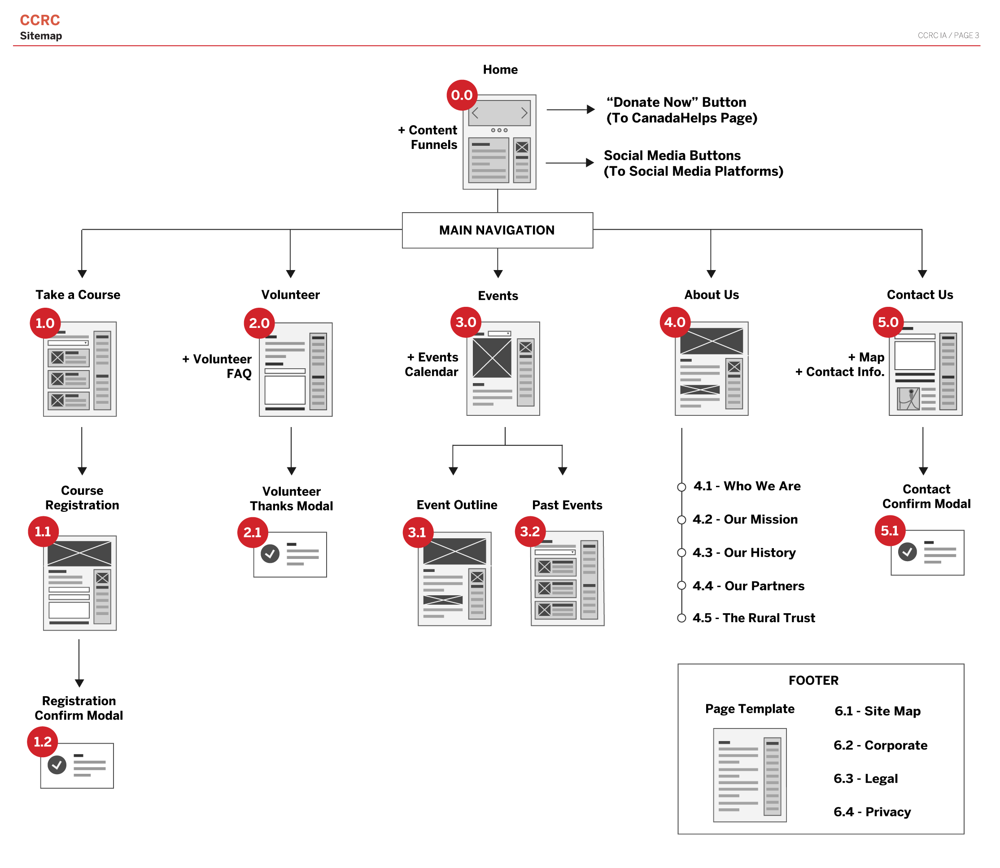4.0: Skeleton: Putting it All Together
4.1: Content; Copy Deck
I worked with the PMs on content, voice, and taxonomy - e.g. emphasize art, emphasize jobs, always refer to educational offerings as “courses”, etc. - which would be consistent wherever the CCRC represented itself.
The stakeholders and I did basic A/B tests of this term vs. that term, etc. with users, and came to a set of conclusions that felt appropriate to the value prop and moved forward with the copy deck, which I wrote based on our content strategy.
The language was kept accessible for all users; in general, there’s no reason to use over-complicated language - and thus, alienate certain users - unless your content is, by its nature, esoteric or jargon-y (e.g. you probably wouldn’t expect accessible language in a website entitled “How to Build a Real, Actual Spaceship”). For general purpose websites, use general purpose language.
I worked with the PMs on content, voice, and taxonomy.
The copy deck came to 14 pages and represented the whole of the website’s content for launch.
4.2: Wireframes
Before I build digital wireframes, I like to use the sitemap to build whiteboard or paper representations of the website.
These sorts of wireframes let me do a number of design iterations for a product, and do research on them, before I move to digital (in AxureRP, Balsamiq, Adobe Photoshop, etc.), which can take more time. Stakeholders can get a low-stakes feel for a website’s layout (and give approvals) before other commitments are made, as well.
I made a number of sketches - my own designs, based on stakeholder feedback and user research - before arriving at what the basis for the final design:
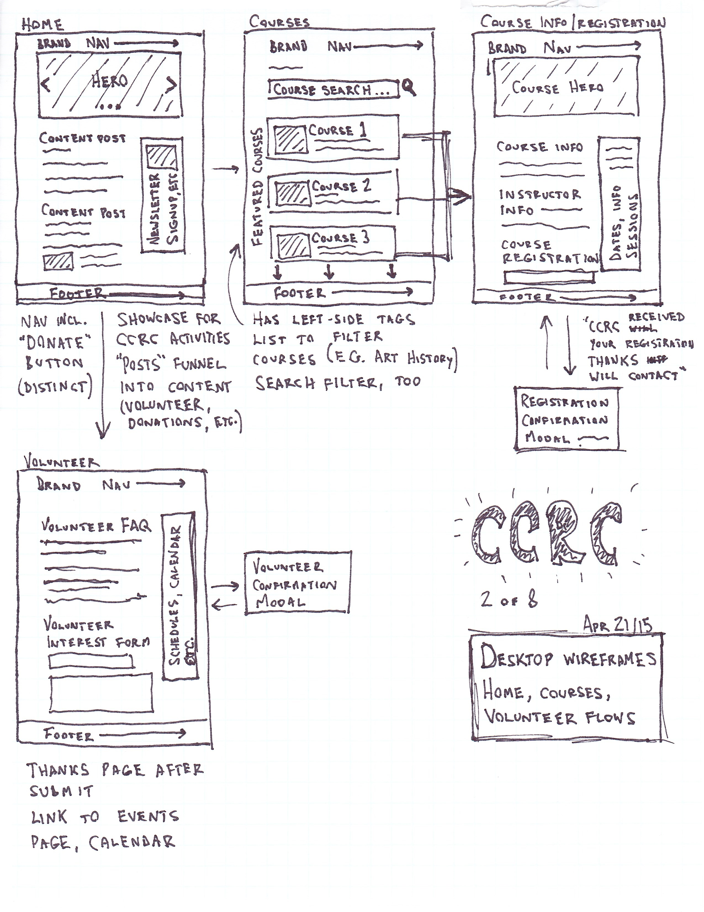I presented these ideas to the developer and the stakeholders for approval; and then moved on to build lo-fi representations of those in Adobe Photoshop. I've included two of the landing page (for desktop and mobile) here:
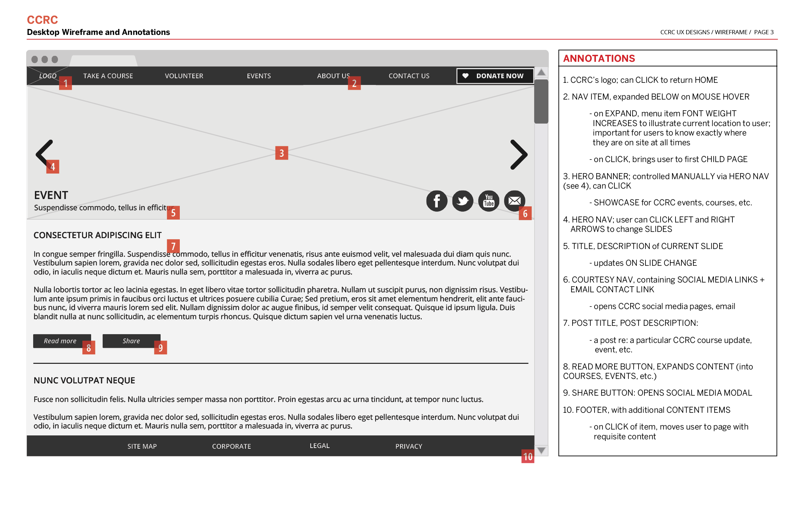 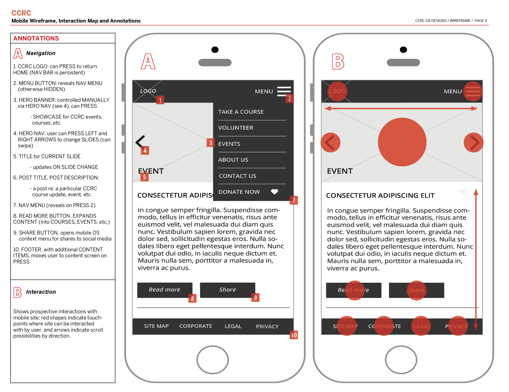4.3: Wireframe Test
I tested these wireframes with the PMs, others close to the project, and the research group.
The testers suggested minor changes (the PMs wanted the carousel slider to auto-scroll; I maintained the left and right manual scroll buttons) that I implemented in final iterations.
The main suggestions were: to move the social media buttons beneath the hero (to not overwhelm the hero with CTAs; users pulled in several directions in the same context, etc.), and a "Home" button, which were agreed to. While logos (and titles) have become conventional "Home" buttons, not all users (Erma in particular) would be aware of that; and we didn't want a subset of the website's users to become lost.
These designs altogether represented a shift in organization for the CCRC website vs. the previous Blyth 14/19: information organized (and presented) as it needed to be rather than all at once, and categorized to be more conventional to funnel users into paths that benefited both their own goals, and the organization's goals.
5.0: Surface: The Visuals
5.1: A Brand
With the brand voice more-or-less established, the PMs and I connected with a graphic designer who we felt could best give it life.
With the graphic designer in the captain's chair, we selected the fonts and colours which we would test:
For fonts, it would be Baufra (for our headers) and Nimbus Sans (for our body copy). Both are sans-serif fonts; but distinctive enough for hierarchical contrast.
For colours, it would be a rural-inspired selection of blue (HEX: #4BA5DC), green-yellow (#D0DE46) and green (#82C457).
When we met together, we described a logo that was faithful to the brand voice and value proposition; youthful, but serious. The PMs wanted the CCRC’s rural context exemplified in the designs, too, as it was believed that it represented another line of user engagement.
After a number of other iterations, we arrived at a logo (and brand colours) which the PMs and I believed as a good fit with our goals:
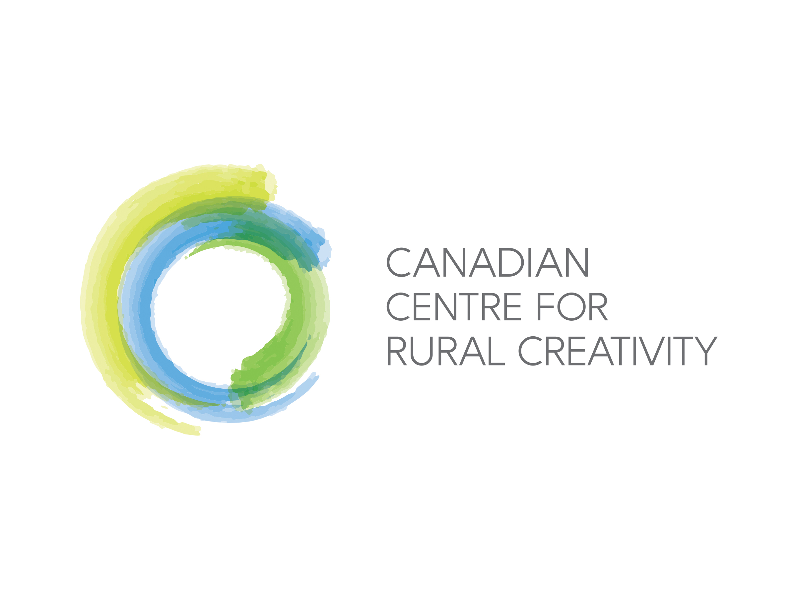5.2: Website Visuals
I worked with a graphic designer to turn the skeleton and brand into a final cohesive design. We plowed through a number of iterations - a ton of time Photoshop - and met with the PMs throughout to test the designs to ensure that what we had worked with the value proposition, brand, voice, etc.
Eventually, we arrived at a final product, which we tested, to success, with the PMs before it was passed on to the team’s web developer for construction. I’ve included the header and hero banner here:
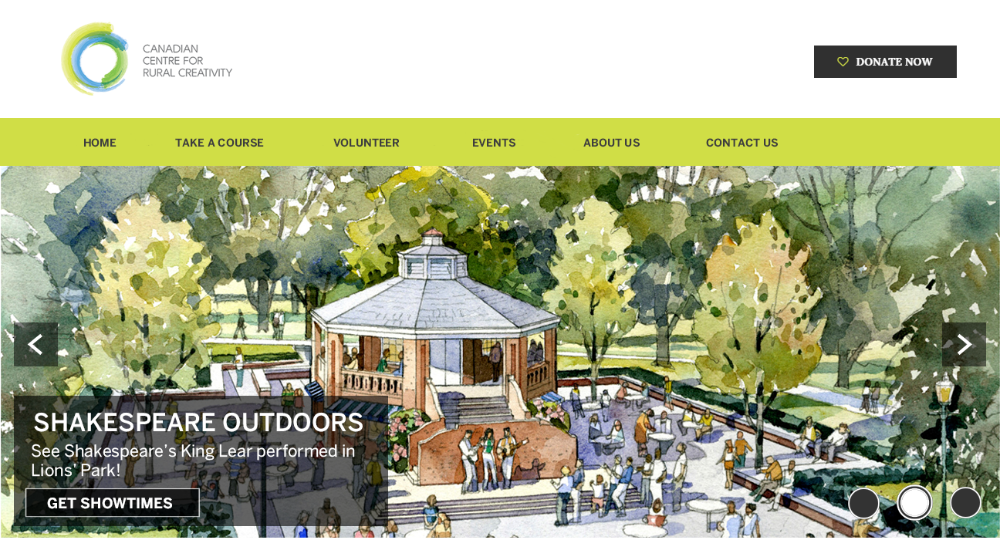6.0: Prompts: "If You Build It..."; Social Media
With the website’s design in place and handed off, the PMs and I moved on to the social media campaign, which would the main prompt to the website product.
The CCRC - and Blyth 14/19 - had produced rich, creative media content through cultural events that it had hosted, but hadn’t leveraged enough of it on social media; this included image, video and audio content that was featured - but difficult to locate - on their current website.
I attended one of these events - to research the organization's "real life UX" - where the CCRC had shut down Blyth’s main street, set up tables right on it, and hosted a farm-catered dinner (with live music) for hundreds of people from across Canada. There were aerial drones that captured the whole event: images and video.
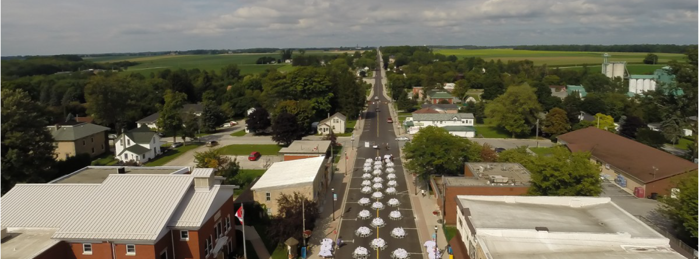The CCRC - and Blyth 14/19 - had produced rich, creative media content through cultural events that it had hosted, but hadn’t leveraged a lot of it on social media.
Based on research in 2013 from online marketing publication iMedia Connection, 60% of users feel better affinity with a brand after consuming media associated with it.
The CCRC event I'd attended was excellent: good wine, good food, good music in a beautiful place. Afterwards, I looked for media about it online and found little; in part because the CCRC’s web presence was still in its nascence, but regardless: it was a huge event, and should’ve been leveraged to drive others to the CCRC.
I suggested that, from then on, whatever media content was produced by the CCRC be posted to appropriate social media platforms. The CCRC lacked Instagram, Pinterest, and YouTube platforms, which, for an organization that generated a lot of rich media content, was unhelpful.
I outlined - with the PMs - social media goals for 2016: expand Twitter, Facebook and LinkedIn followers; and create accounts for Instagram, Pinterest, YouTube, Vine, Google+, SlideShare, etc.
6.1: AdWords
I developed some SEO guidelines for the CCRC as the project neared completion; which included keyword AdWords keyword research, a page of which I’ve included here:
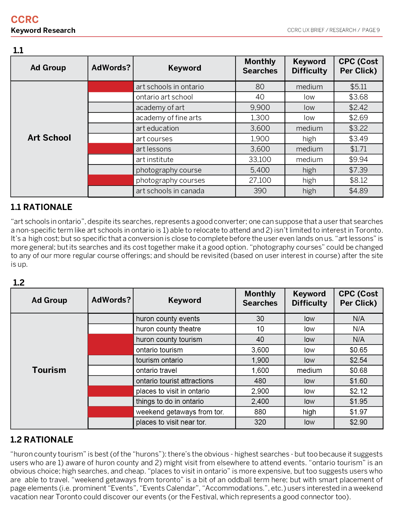SEO, if set up right, works as another “user prompter” to get eyeballs on your product. I consider SEO to be an pretty important part of the design process; because where, or how, an ad is positioned can contribute to the continuum (e.g. what extends outside of your product’s ecosystem) of your users’ experiences.
7.0: Outcomes
This project is ongoing. I'll update this section as outcomes become relevant to my portfolio.
8.0: What I Learned
The CCRC project continues; and my education does, too.
Designs with multiple users / red routes can be a challenge; it’s hard to determine levels of emphasis (i.e. particular paths, or calls-to-action, for particular user groups). As always, the best ways to address these sorts of challenges is through user testing / feedback. Test early, and test often.
In addition, I learned the value in total team involvement throughout a project’s development. If your project requires a certain type of professional - a graphic designer, a web developer, etc. - then it’s helpful to integrate them into the project as soon as possible.
As an example: what a designer might want and what a developer might have the skill / resources for aren’t always compatible, and to discover these barriers sooner vs. later can make for a better designed project with fewer last-minute pivots in scope, structure, etc.